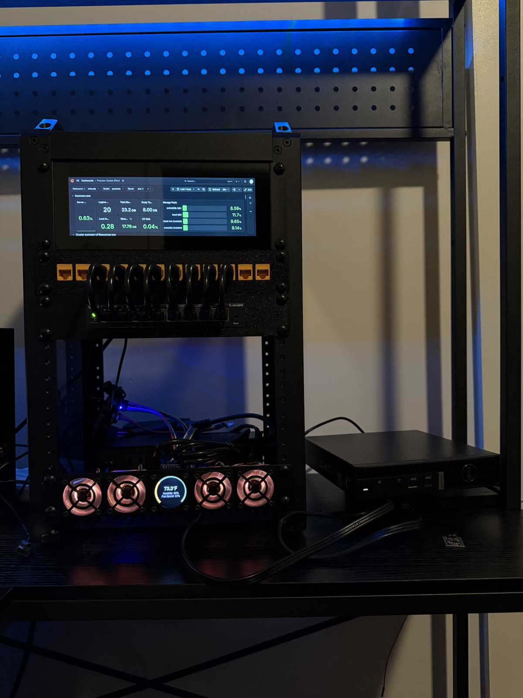
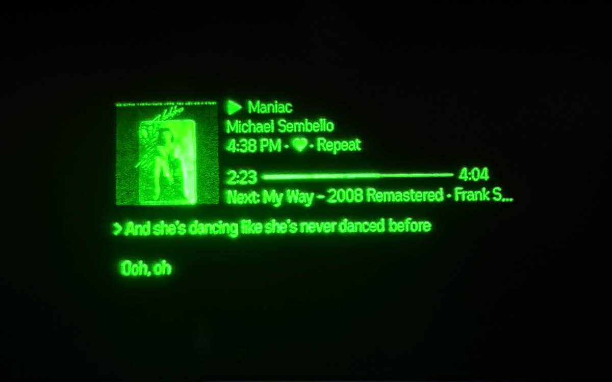
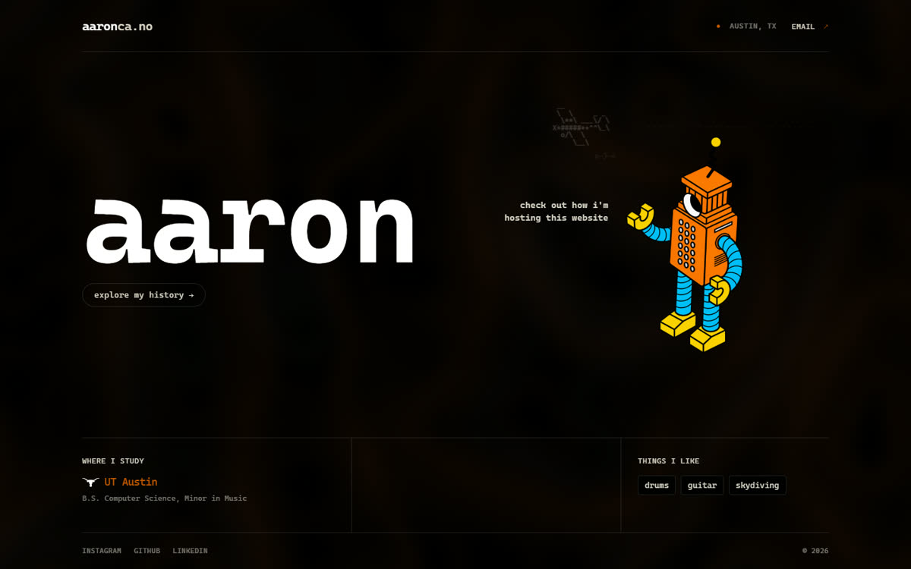
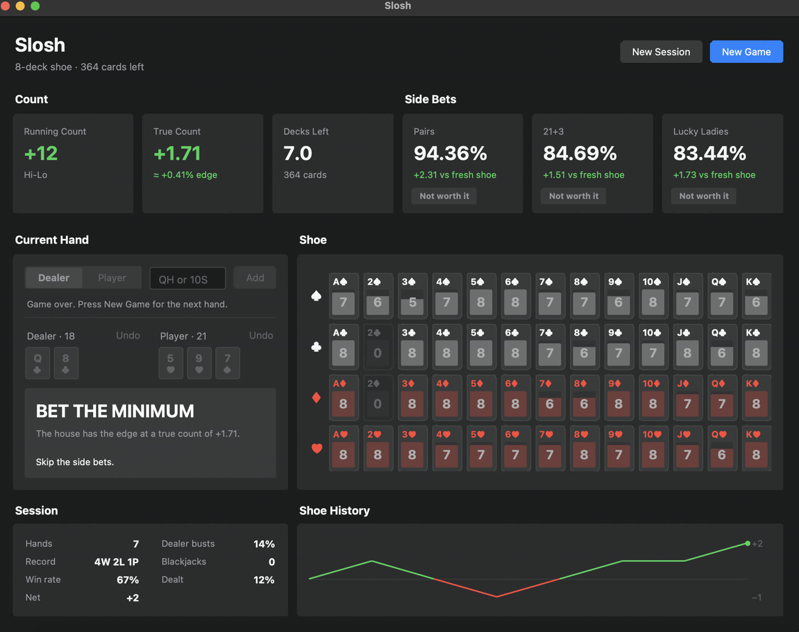
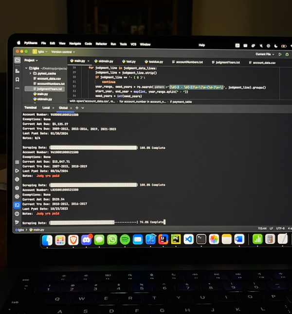
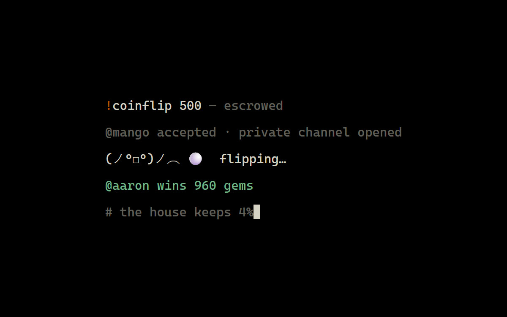
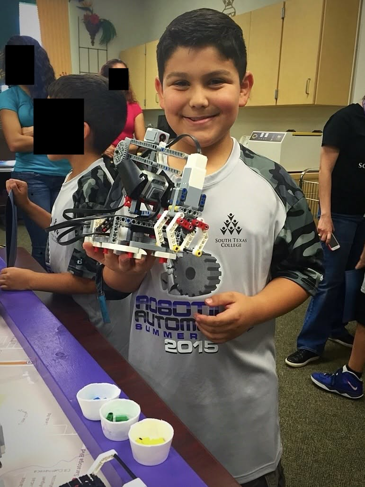

projects
click a card for the full breakdown. more writeups on the way.

homelab
2026Space heater that runs some of my QOL services. A rack, a mini pc, and a fan controller nobody asked for.

now-playing
2026A full Spotify controller for my smart glasses — lyrics, gestures, and dithered album art in 16 shades of green.

loadclock
2026Spaceland's load board + winds aloft on my glasses, reverse-engineered from the dropzone's own web clock.

this website ↗
2026The site you're on. Ascii skydivers, a topo background, and a walkable 3d museum. View the source on github.

slosh
2025Live blackjack side-bet pricing from a depleted shoe — the math that turns losing games into +100% RTP opportunities.

raccceTrack
2024Community-fed tracker for sweepstakes-casino races — the data that shows when a race turns +EV. No API, so the users are the API.

Linebarger
2024Internship tooling: bulk-triaging delinquent tax accounts from a county server that barely speaks TLS.

GemFlip
2024A discord gambling economy: p2p coinflips in private channels, escrow that refunds on failure, and a 4% house fee.

lamar.academy
2022A link-in-bio hub for my high school, on its own vanity domain. The url now belongs to a london beauty clinic.

e.rip
2021Bio-link website that grew to over 25,000 users. White-labeled engine, custom badge layer, eventually sold.

STC summer camp
2015The summer camp I helped launch with Dr. Carlos Margo. First cohort pictured.